Compte = ressource + rôle + périmètre. Plan de charge = une vue, pas un objet.
59 captures. Les 16 listes du menu ne suffisent pas : le métier est dans les onglets, les +, les Kanban et les modales.
Écran par écran
Écran
Chemin
Il fait
Il crée
Il ne fait pas
Tableau de bord
lecture
Agrège
rien
Traiter un besoin
Actions
C1–C3
File des faits CRM
depuis une fiche
Porter un matching
Candidats
C2
Vivier hors staff
Action, Positionnement, Besoin, Projet, Contrat
Temps, prestation
Ressources
C3 C4
Staff
+ Prestation, Formulaire
Recruter un inconnu
Sociétés
C1 C3 C5
Client / fournisseur
Contact, Besoin, Projet
Staffer
Contacts
C1
Personne chez la société
Action
Être un candidat
Besoins
C3
Demande à pourvoir
Positionnement, Action, Projet
Affecter le temps
Positionnements
C2 C3
Matching humain × besoin
rien (c’est le lien)
Facturer
Projets
C3 C4 C5
Mission signée
Prestation, Action
Recruter
Prestations
C4
Ressource × projet
—
CRM
Achats
C5
Coût externe
Paiement
Staffing
Apps
hors cœur
Greffons
selon l’app
Remplacer C1–C5
Administration
tous
Rôles, états, types
référentiels
Produire du CA
Chrome commun (toutes les listes)
Vu sur Candidats, Ressources, Sociétés, Contacts, Besoins, Positionnements, Projets. Ce n’est pas du décor : c’est le gabarit à reproduire une fois, pas seize fois.
Fil d’Ariane
Titre + compteur
Mots-clefs + pastille Filtres
Recherche libre + sélecteur de colonnes (roue)
Table triable, cases à cocher
Pagination implicite / scroll
+ bleu en haut à droite = Créer — sauf Actions et Positionnements : création depuis une fiche
Liste / Kanban sur Candidats, Ressources, CRM, Besoins, Positionnements — pas sur Projets
Carte des onglets (cliqué, pas déduit)
Un objet n’est pas sa liste. C’est sa fiche + ce que le + sait créer.
Règle vue en cliquant « Créer un projet » depuis un besoin : les positionnements liés à un candidat sont exclus. Il faut d’abord convertir le candidat en ressource. C’est la preuve C2 ≠ C4.
Sans données réelles. Les boutons + suivent les règles d’audit — un candidat ne crée pas de contact, un positionnement n’a pas de +, un projet exclut les positionnements candidats.
Scénarios — tests fonctionnels visuels
Valide = enchaînement autorisé. Invalide = le métier refuse. C’est le contrat du futur backend.
Valides
Invalides
Spécification métier Ava Manager. Dérivée des 59 écrans cliqués, pas d’un manuel Boond. Pas de SQL. Pas d’écrans à recoder. Les DEC-Q01 à DEC-Q12 ci-dessous sont des réponses d’Ahmed déjà prises (DEC-01 à DEC-18). La feuille F1–F36 est close. Formules = convention ATL (vue Ava → 15 parcours). À VALIDER MÉTIER sur cette page Boond = point hors DEC, à relire contre F/ATL.
Preuve de méthode : le bouton Créer d’une fiche est le vrai menu. Un objet qui n’apparaît dans aucun Créer n’est pas un objet du noyau.
1. Vue générale du domaine
Ava Manager n’est pas 13 listes. C’est un graphe d’objets traversé par cinq métiers. Le miniature utile, c’est C3 Staffing + C4 Production. Sans Positionnement, le staffing n’existe pas. Sans Prestation, le Projet est un titre.
Achat, Paiement, Facture fournisseur, Temps, Absence, Référentiels, Compte (ressource + rôle + périmètre)
Des modules marketplace
Vue calculée
Planning, dashboard, reporting, pipeline, occupation, CA / coût / marge
Une table à écrire
Deux identités humaines distinctes, démontrées par les onglets : Candidat ≠ Ressource. Un candidat n’a jamais Prestation / Temps / Formulaires. Une ressource n’est pas un vivier.
2. Objets métier
Propriétaire = rôle qui en répond. Créer / modifier / supprimer = portes vues en audit, simplifiées pour Ava.
Noyau
Objet
Définition
Rôle
Relations
Cardinalités
Propriétaire
Créé par
Modifié par
Supprimé / archivé
Bloque la suppression
Société
Personne morale : client, prospect ou fournisseur. Un seul objet, plusieurs rôles.
Ancre C1, C3, C5. Sans société, pas de besoin ni de fournisseur.
1 ressource : N prestations. Une Personne porte l’identité. CandidatProfile et RessourceProfile sont deux profils. La conversion active le profil Ressource sans effacer l’historique Candidat. Décidé (Ahmed).
Staffing / RH / production
+ liste Ressources ; ConvertCandidateToResource
Fiche ressource
Archivage seulement si prestations / temps historiques.
Prestation, Temps, Compte
Besoin
Demande client à pourvoir (Régie / Forfait) + status + priority (P1–P3) + CA pondéré.
Pivot C3. Attire des positionnements. Peut naître un Projet. Kanban par status, badge de priorité.
N→1 Société (obligatoire). N→0..1 Contact. 1→N Positionnement ; 1→0..N Projet.
1 besoin : N positionnements. Un besoin peut n’avoir aucun projet. Un projet peut n’avoir aucun besoin (CreateProject US5).
Commercial staffing
+ liste (via Contact) ; + fiche Société / Candidat / Ressource / Contact
Fiche besoin (dont état, pondération)
Clos / perdu. Delete interdit dès 1 positionnement.
Projet existant. Société fournisseur existante (ou créée comme Société).
Branches
Freelance : facture liée à une Ressource (colonne vue, écran 42) — À VALIDER MÉTIER
Sorties
solde ; annule
Annulation
annule si aucun paiement effectué
Erreurs
I8 ; projet clos
Facture client (PostProduction, 403 /invoices) : hors domaine V1. Ne pas la glisser dans C4.
12. Passages entre les chemins
De
Vers
Opération
Condition
C1
C3
CreateNeed depuis Société (Contact optionnel)
Société connue
C2
C3
PositionCandidateOnNeed
Besoin déjà en C3
C2
C4
ConvertCandidateToResource puis CreateService*
Jamais C2 → Prestation direct
C3
C4
CreateProjectFromNeed / AssignResourceToProject
Positionnement ressource (I10)
C3 / C4
C5
CreatePurchase
Projet
C4
C3
PositionResourceOnNeed
Staff déjà ressource, nouveau besoin
Chaîne nominale Avaliance : C1 nourrit le client → C3 pourvoit → (C2 alimente le vivier testé sur C3) → conversion → C4 exécute → C5 si externe.
13. Scénarios valides du simulateur
Le volet Simulateur rejoue ces scénarios. Le chemin heureux complet :
CreateCompany (Société Alpha)
CreateContact
CreateNeed
Créer Candidat
PositionCandidateOnNeed
AdvancePositioning → retenu (sur le besoin encore ouvert)
ConvertCandidateToResource
CreateProjectFromNeed (maintenant ressource)
Prestation créée
RecordTimesheet
Vues : CA = Σ temps × tarif prestation ; coût = Σ temps × coût ressource ; marge = CA − coût − achats
Variante staff déjà ressource : sauter 4, 5 (candidat), 7 — PositionResourceOnNeed puis projet.
14. Scénarios invalides
Tentative
Invariant
Résultat
CreateService avec un Candidat
I4
Refus 409 CANDIDATE_CANNOT_SERVE
Positionnement sans Besoin
I1
Refus 400
Prestation sans Ressource
I3
Refus 400
Temps sur le Projet
I5
Refus 400 TIME_NEEDS_SERVICE
DELETE Ressource avec prestations
I11
409, proposer ArchiveResource
Positionnement → retenu, besoin clos
I17
Refus
CreateProjectFromNeed avec seulement des pos. candidats
I10
409, demander conversion
Contact → CreatePositioning
I14
Opération absente
Candidat → CreateContact
I15
Opération absente
15. Vues calculées
Vue
Sources
Formule (V1)
Quand
Planning / charge
Prestation, Absence, Positionnement (dates)
Superposition ressource × jour. Pas une table.
Temps réel à la lecture
Occupation / TACI
Temps, capacité ressource, absences
temps facturable / temps disponible — libellé Boond à retraduire
Temps réel ; cache quotidien OK
CA besoin pondéré
Besoin.budget, Besoin.ponderation
budget × pondération (déjà calculé en fiche)
À l’écriture du besoin, champ dérivé stockable SI on fige la formule — sinon calcul. À VALIDER MÉTIER : stocker le résultat pour l’historique si la pondération change.
CA projet
Prestations (tarif × charge ou Σ temps × tarif)
À VALIDER MÉTIER : CA signé (prestation) vs CA réel (temps)
Lecture
Coût projet
Prestations (coût ressource × temps) + Achats
somme
Lecture
Marge courante
Prestations actives, temps, achats, TJM, absences
(CA − coût) / CA si CA > 0. Recalculée tant que l’objet est actif.
Temps réel. Jamais une table source.
Marge clôture
Snapshot à CloseService / CloseProject
Copie figée de la marge à l’instant T. Historique, pas une 2e vérité vivante.
Écrit une seule fois à la clôture.
Dashboard / pipeline / reporting
Comptes d’objets + vues ci-dessus
Agrégats. Ne crée rien.
Temps réel ou cache court
Delta achat
Achat.total − Σ paiements engagés
Preuve écran 41 : pas un champ saisi
Lecture
Interdit : table Marge, table Planning, table Occupation comme source de vérité.
16. Questions métier
Le détail vivant est dans l’onglet Questions (réponses Ahmed, bouton Modifier pour la direction).
Les 12 questions sont Répondu (Ahmed). Détail vivant : onglet Questions. Synthèse figée : Personne + 2 profils · Besoin 1→N Projets · pas de projet auto · Prestation = conditions économiques + ressource immuable · N prestations simultanées · type internal/external · Contact facultatif · P1–P3 = priorité · pas de Projet depuis Candidat · marge_courante + marge_cloture.
17. Périmètre V1
Noyau V1
Société, Contact, Action (3 types)
Personne + CandidatProfile + RessourceProfile (resource_type, pas de fusion)
Besoin (priority ≠ status), Positionnement
Projet, Prestation (ressource immuable, N simultanées, marge_courante / marge_cloture)
Règle : pas parce que Boond l’a. Parce qu’Avaliance staffe et produit.
18. Risques de modélisation
Risque
Si on le commet
Parade
Fusionner Candidat et Ressource en une seule table
I4 meurt ; les temps n’ont plus de sens
Personne commune + deux profils. Seul RessourceProfile a des Prestations.
Table Fournisseur
Double vérité C1/C5
I8
Table Planning / Marge
Écart avec les prestations
Vues
CRUD status à la place des opérations
On peut mettre retenu sur besoin fermé
Commandes nommées + I17
UPDATE prestation.resource_id
On perd TJM, temps, marge de la mission précédente
I18 : CloseService + CreateService
P1–P3 comme colonnes d’état
Urgence et cycle de vie mélangés
priority + status (Q10)
CreateProject depuis Candidat
C2 saute C3/C4 ; I4 meurt
I21, wizard sans insert
Deux tables Interne / Externe
Deux moteurs de staffing
resource_type + supplier_company_id (I20)
Listes avant les Créer
Clone visuel qui n’enchaîne pas
Chaque lot V1 livre une opération
14 étapes candidat recopées
Admin avant le métier
Cycle court, référentiel plus tard
Prestation comme fiche autonome
Boond n’en a pas ; le clic va à la ressource
Ligne de projet / ressource
Temps.projet_id « pour simplifier »
On facture sans savoir qui
I5
Questions métier
Les 12 questions sont Décidé (Ahmed). La direction peut encore corriger via Modifier. Les changements restent dans ce navigateur ; pour les figer dans le hub public, renvoyer le JSON.
Clic sur une image pour l’agrandir. 01–16 = hall (menu). 17–33 = onglets/+ des fiches C2-C3-C4. 34–59 = contact complet, Kanban, C4/C5, reporting, self-service, admin.
Hors preuve (voir « Limites » en bas) : les 9 apps internes et les sous-pages Administration, sans URL directe.
01 — Tableau de bord / Synthèse
Chemin : lecture de C1–C4 · Il agrège. Il ne crée rien.
Il fait
Agrège. Ne crée rien. Hors du flux métier : on le branche quand les objets existent.
Il ne fait pas
Traiter un besoin, poser un matching, facturer.
Zones
Menu gauche · recherche Ctrl+K · Synthèse / Mes alertes · 6 widgets · roue de config
Widgets
Répartition besoins (A traiter, P1–P3) · CA facturé/signé · Synthèse d’indicateurs (projets, positionnements, contacts, sociétés, ressources, candidats) · CA période/production/signé · Marge signée · Répartition candidats
Chef de projet
Hors v1. On le branche quand les objets existent. Un dashboard livré trop tôt est un écran vide qui fait semblant.
Auditeur
Les widgets lisent le graphe. Un dashboard sans positionnement ni besoin est décoratif.
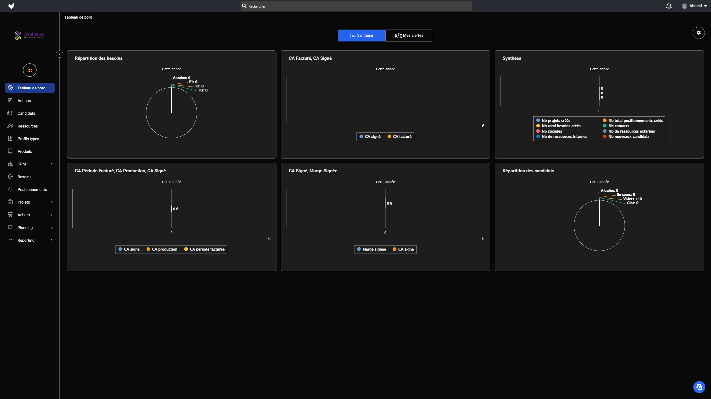
02 — Tableau de bord / Mes alertes
File d’alertes configurées en admin. Vide = « Vous n'avez aucune alerte ».
Il fait
Affiche une file d’alertes dont les règles vivent en administration. N’est pas un objet métier.
Il ne fait pas
Créer un besoin, un candidat, une action. C’est un réglage, pas un flux.
État vu
Écran vide : « Vous n'avez aucune alerte ».
Chef de projet
Hors v1. Ne pas coder une « inbox d’alertes » avant d’avoir les objets qui les déclenchent.
Auditeur
Les alertes sont un réglage admin, pas un objet métier. Compter 0 n’est pas « le module n’existe pas ».
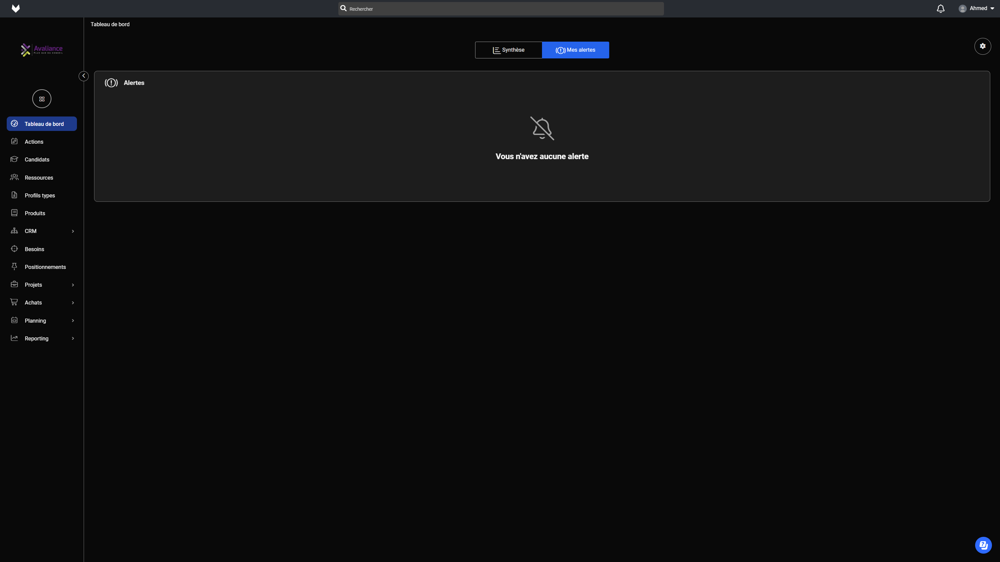
03 — Actions (liste)
C1 C2 C3 — le journal unique. Pas de bouton +.
Il fait
Une file de tous les faits CRM. Journal unique, filtrable, pas un matching.
Il ne fait pas
Créer. Pas de +. La création est sur la fiche porteuse (candidat, contact, besoin, projet, ressource).
Lot journal, pas lot 1. L’action est polymorphe : un seul type d’objet « Action », plusieurs porteurs. Recopier cette liste sans le Créer-from-fiche = un mur de notes orphelines.
Auditeur
Liste filtrée par défaut sur un manager. Compter 0 n’est pas « le module est vide ». Preuve du cloisonnement : le compte = ressource + rôle + périmètre.
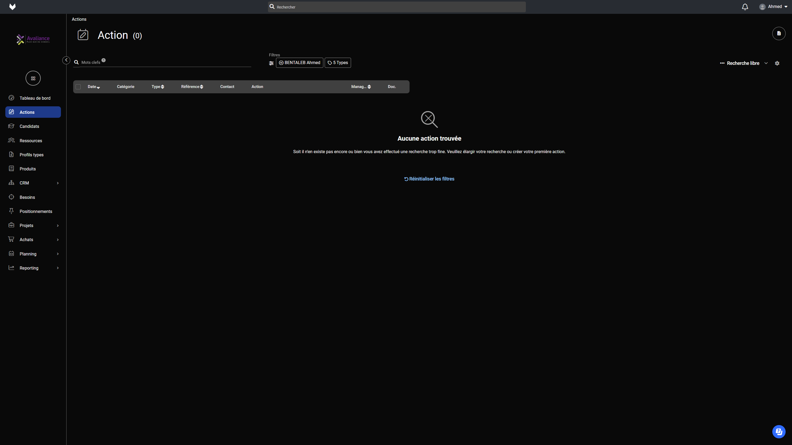
04 — Candidats (liste)
C2 — vivier hors staff. + crée une fiche.
Il fait
Vivier hors staff. Pas de temps, pas de prestation : ça c’est la ressource.
Il crée
+ → fiche nouvelle (/candidates/0/information). Depuis la fiche : Action, Positionnement, Besoin, Projet, Contrat.
Il ne fait pas
Saisie de temps, prestation, absences. Un candidat n’est pas un contact (C1).
A relancer, En cours, A traiter, A supprimer, Collaborateur, Vivier
Chef de projet
Objet n°2 du miniature après Société/Besoin. Même gabarit de liste que Ressources, autre objet. Ne pas fusionner les tables si on veut les temps plus tard.
Auditeur
L’étape est un référentiel admin (14 étapes), pas un enum figé. La liste n’invente pas le cycle : elle l’affiche.
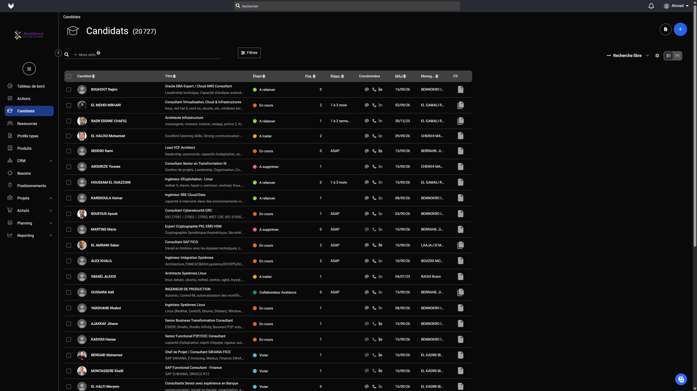
05 — Fiche candidat / Synthèse
C2 — l’écran qui enchaîne vers C3. Le + est le métier. Ne passe pas par Contact.
Il fait
Vue d’ensemble du vivier : identité à gauche, actions / positionnements / DT à droite. C’est ici qu’on pose un humain sur un besoin.
Nom, titre, étape, manager, CV. Le reste est confort.
Chef de projet
Champs v1 : nom, titre, étape, manager, CV. Ne pas recoder les 40 champs RH avant d’avoir le + Positionnement.
Auditeur
« Visible uniquement de vous » = cloisonnement. À prévoir dans les droits, pas comme un simple checkbox UI.
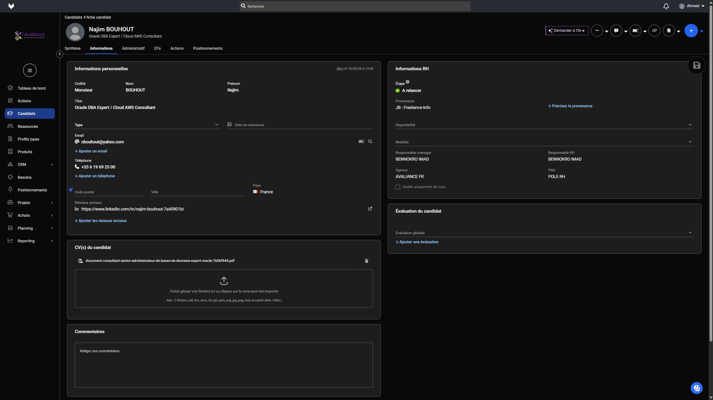
07 — Ressources (liste)
C3 C4 — le staff. Autre objet que Candidat.
Il fait
Staff (salarié, interne, freelance interne). Porte prestations, temps, frais, absences — ce que le candidat n’a pas.
Différence vs candidats
Colonnes État + Tarif HT. Pas « Étape ».
Il crée
+ sur la liste. Depuis la fiche : Prestation, Formulaire, Avantage, Positionnement, Projet…
Il ne fait pas
Recruter un inconnu. Ça c’est Candidat (C2).
Vues
Liste / Kanban · bouton Apps
Chef de projet
Même gabarit de liste que Candidats, autre objet. Ne pas fusionner les tables si on veut les temps. C4 s’appuie ici.
Auditeur
Filtre « 2 États » par défaut : la liste n’est pas exhaustive sans reset. Même piège que Actions filtrées sur un manager.
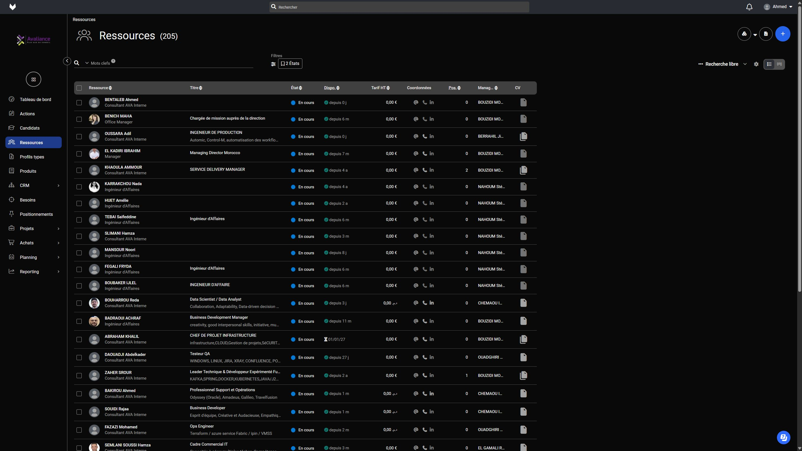
08 — Profils types
Gabarit tarifaire. Catalogue, pas un flux quotidien. Hors v1.
Il fait
Gabarit tarifaire (titre, TJ vente, coût, marge, renta, agence). Sert à pré-remplir, pas à staffer.
État
Vide + « Créer un profil type »
Il ne fait pas
Porter un besoin, un positionnement, un temps.
Chef de projet
Hors v1. On tarife sur la ressource / la prestation. Ne pas ouvrir un catalogue avant le graphe.
Auditeur
Module catalogue, pas un flux quotidien. Présent dans le menu donc activé sur ce contrat — ne pas conclure « inutilisé » sans usage réel, mais ne pas le mettre dans le miniature.
Proposé, CV envoyé, Validé, Gagné, NO GO interne, Désistement
Vues
Liste / Kanban
Chef de projet
Si on ne code que ça + besoin + profil, on a le staffing. Sans cet objet, les listes Candidats et Besoins ne se parlent pas.
Auditeur
Un profil (candidat XOR ressource) × un besoin. L’état est un référentiel (9 états admin). C2 pointe ici sans passer par Contact ni Besoin — le besoin est déjà là (C3).
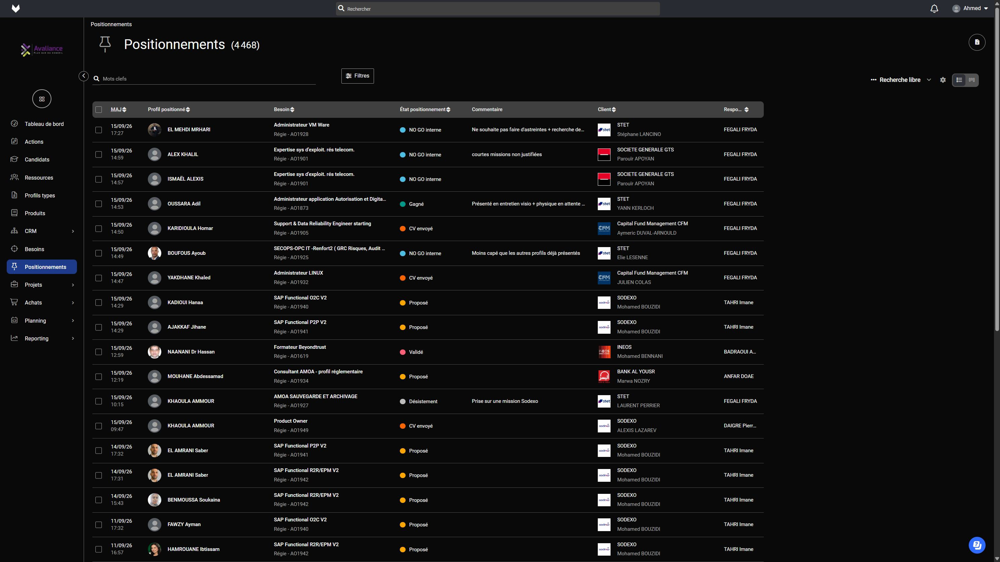
14 — Projets
C3 → C4 C5 — mission signée. Sans prestation = un titre. Pas de Kanban.
Il fait
Mission contractualisée. Relie le client à des prestations (qui travaille) et des achats (ce que ça coûte).
Il crée
+ sur la liste. Depuis la fiche : Prestation, Action. Option Lots/Jalons. Peut naître du Besoin.
Il ne fait pas
Recruter. Porter le matching (c’est le Positionnement, en amont).
Colonnes
Début, Fin, Référence PRJ, Client, CA HT, Renta. %, Manager
Ligne
Type Régie/Forfait sous la référence
Vues
Liste seulement (pas de Kanban) · sous-menu Prestations
Chef de projet
Un projet sans prestation = un titre. Lot suivant = Prestations. C’est le pivot de la production, pas du vivier.
Auditeur
CA à 0 sur beaucoup de lignes : le projet peut exister avant le chiffrage. Ne pas exiger le CA à la création.
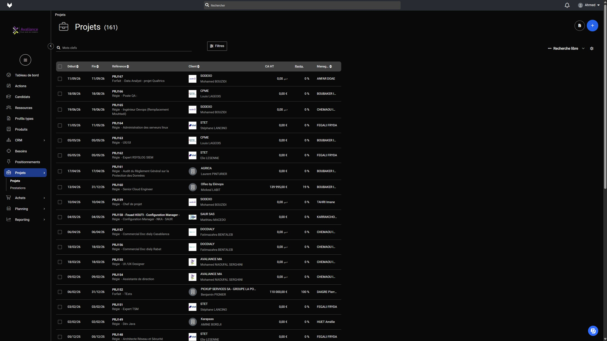
15 — Administration
Tous les chemins — régler le graphe, pas le parcourir.
Il fait
Régler le graphe : rôles, agences, états, types. Les listes n’affichent que ce référentiel.
PostProduction = facture client (d’où le 403 sur /invoices). HRFlow = entrée C2. ExtractPayroll = sortie C4. Le reste = templates, mail, viewer, célébrations, Microsoft, plan de prod.
Il ne fait pas
Remplacer C1–C5. Le miniature tient sans ces 9 écrans.
Chef de projet
Hors miniature. C’est l’abonnement à 2 500 €, pas le métier quotidien. 9 apps = 9 écrans non audités.
Auditeur
9 apps = 9 écrans non audités. L’abonnement se joue là. Tant qu’ils n’ont pas de PNG interne, on n’écrit pas leurs champs.
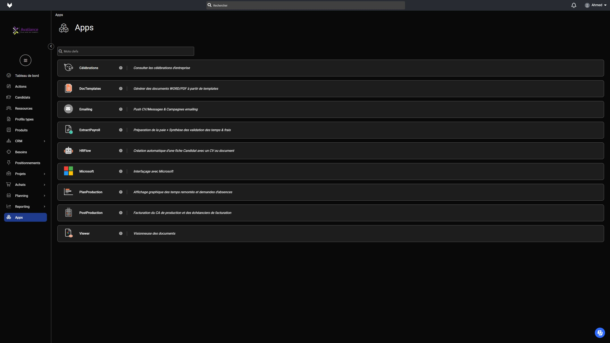
Fiches et boutons — ce que le menu ne montre pas
17 — Fiche candidat / Administratif
C2 — contrat souhaité, pas le matching. + Ajouter un contrat depuis ici.
Il fait
Données contractuelles + identité civile. Ce n’est pas l’écran qui pose un humain sur un besoin.
Résumer le profil / Demander à l’IA — greffon, pas le métier.
Il ne fait pas
Créer un positionnement. Ça reste le + de la fiche.
Chef de projet
V1 : un CV fichier + un bloc compétences. Pas 13 expériences à recoder.
Auditeur
Le DT est un objet éditable, pas un PDF mort. L’expérience a un + propre.
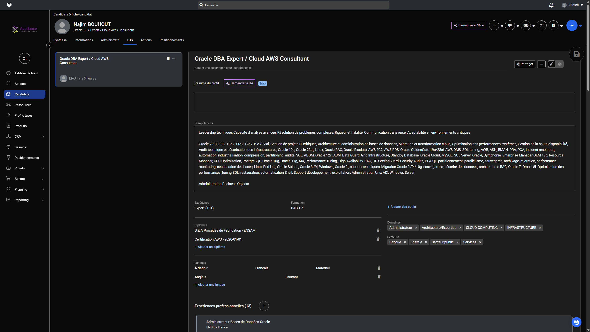
19 — Fiche candidat / Actions
C2 — le journal de CE candidat. + crée une action déjà accrochée à lui.
Il fait
Timeline des faits sur ce porteur. Pas la liste globale /actions.
Il crée
+ à côté de « Action (n) » → modal d’action pré-liée au candidat.
Chrome
Action (n) · + · Filtres · cartes datées
Chef de projet
La liste Actions du menu est un filtre. La création vraie est ici.
Auditeur
Même gabarit vide/plein que sur le besoin. Un type d’écran, plusieurs porteurs.
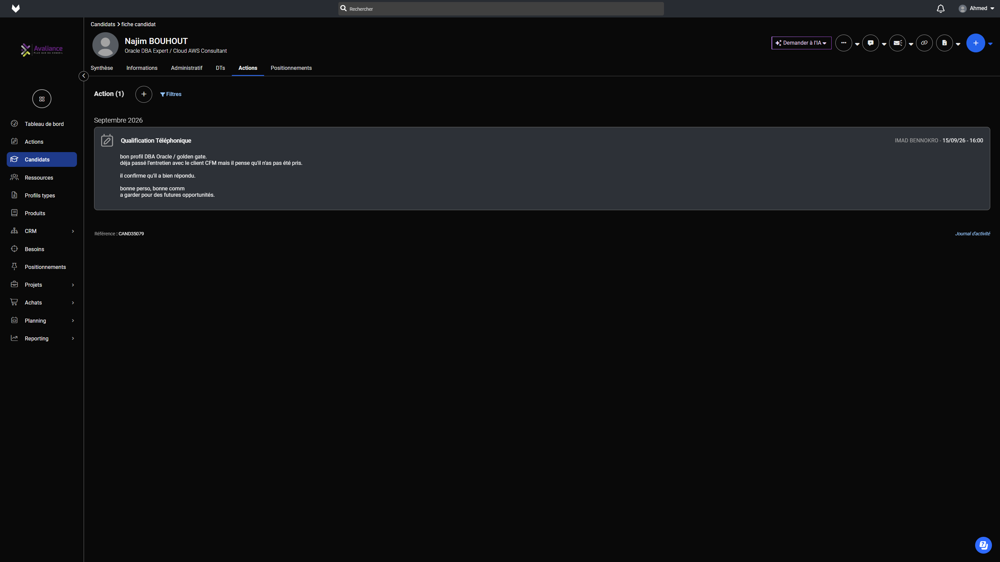
20 — Créer une Action (depuis le candidat)
C2 — modal. Le porteur est déjà choisi. On ne crée pas une action orpheline.
Il fait
Formulaire : Type · Date · Manager (prérempli) · corps riche · Utiliser un modèle · Créer un événement · Annuler / Enregistrer
Il ne fait pas
Choisir le candidat : il est dans le bandeau. Preuve : l’action a un porteur obligatoire.
Chef de projet
Lot journal = ce modal, pas une page /actions/new.
Auditeur
Le manager est le compte courant. Le cloisonnement commence à la création.
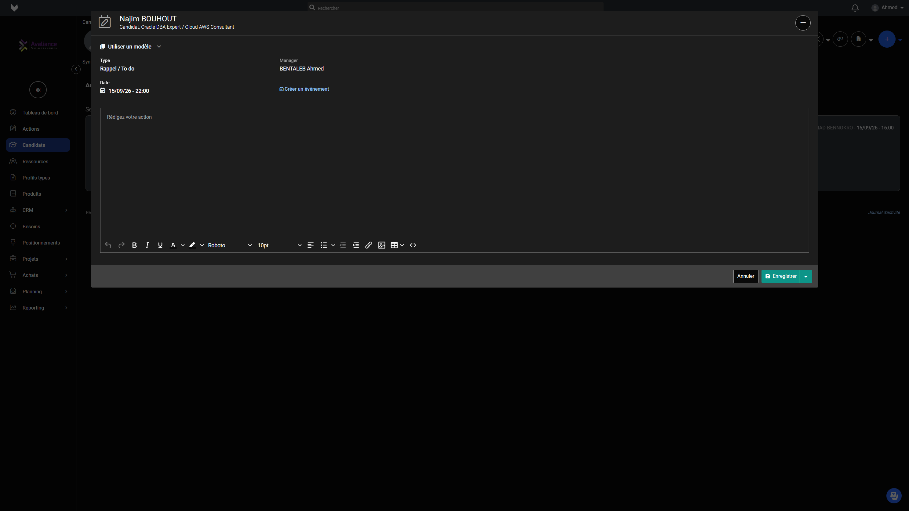
21 — Types d’action (liste ouverte sur candidat)
Référentiel admin, vu sur C2. Ne pas inventer les types.
Types vus
Note · Rappel / To do · Rendez-vous · Entretien Téléphonique · Entretien physique · Qualification Téléphonique · Mail · Entretien Visioconférence · Autre
Chef de projet
V1 : Note + To do + Entretien. Le reste est le référentiel à brancher plus tard.
Auditeur
Ces types sont ceux du porteur candidat. Contact / besoin / projet auront d’autres listes. À comparer, pas à fusionner.
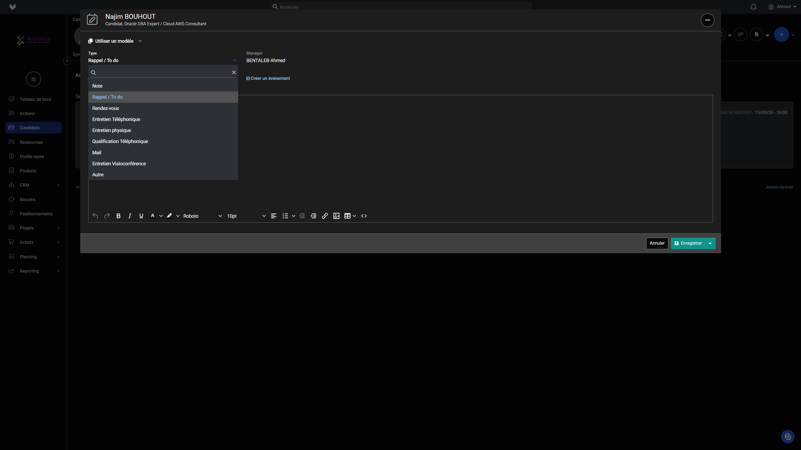
22 — Menu + de la fiche candidat
C2 — le vrai menu. Cinq sorties, zéro Contact.
Il crée
Action · Positionnement · Besoin · Projet · Contrat
Il ne crée pas
Contact. Un candidat n’entre pas dans C1 par ici.
Chef de projet
Si le miniature n’a pas ces cinq lignes, C2 est un carnet.
Auditeur
Preuve visuelle du graphe : Positionnement est une sortie, pas un passage par Besoin.
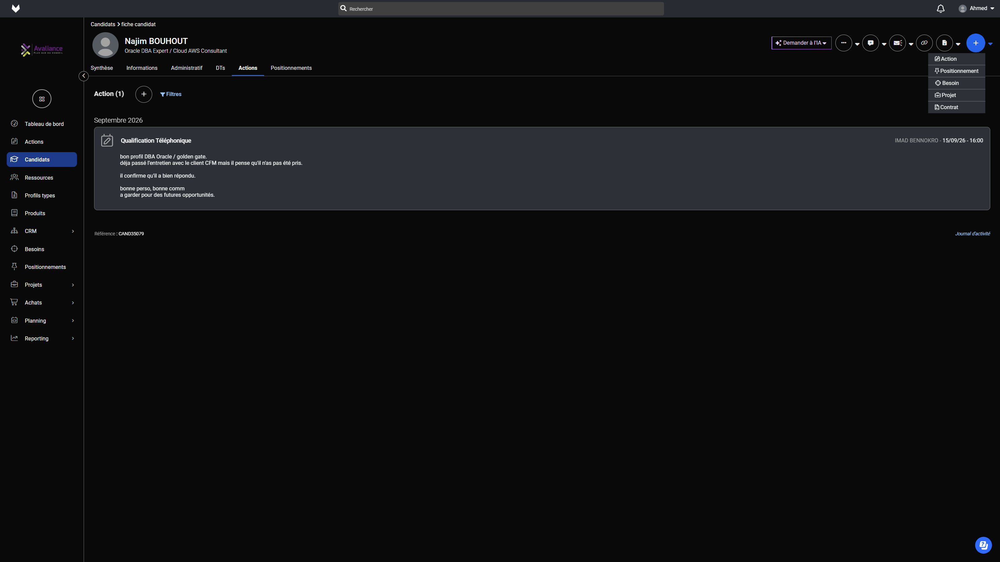
23 — Créer un Positionnement (depuis le candidat)
C2 → C3. On ne crée pas un besoin : on en choisit un déjà là.
Il fait
Assistant : (1) Sélection des besoins — la liste Besoins s’ouvre sous le bandeau (2) Confirmation — notifier responsable candidat / besoin (3) Positionner
Positionner
Désactivé tant qu’aucun besoin n’est coché.
Il ne fait pas
Créer un besoin. Le candidat pointe vers C3, il n’y entre pas.
Chef de projet
C’est l’écran de matching. Sans cette sélection, les listes Candidats et Besoins ne se parlent pas.
Auditeur
Preuve : 1 922 besoins sous l’assistant. Le positionnement n’invente pas la demande.
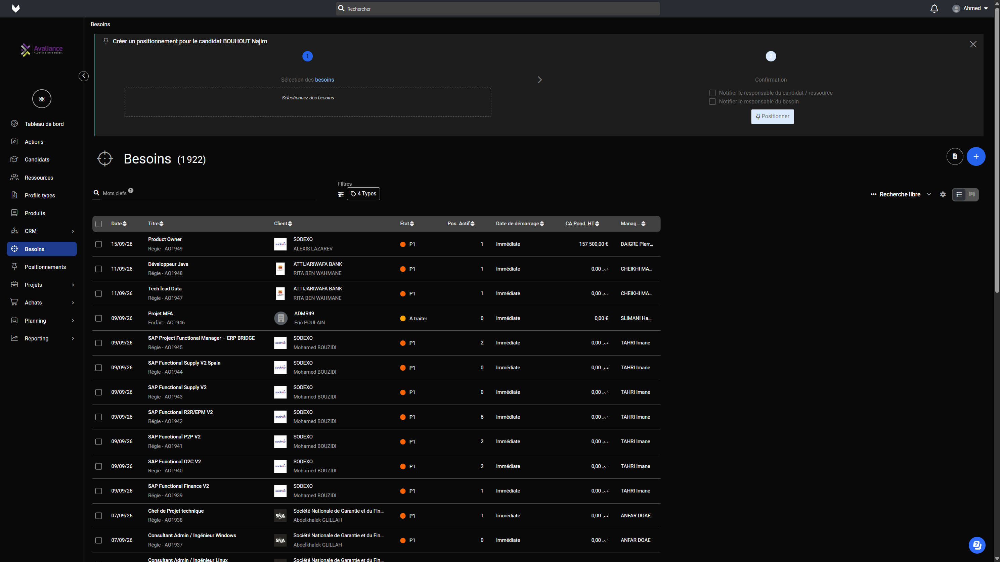
24 — Fiche besoin / Informations
C3 — la demande. Onglets : Informations, Positionnements, Actions, Projets.
Gauche
Titre · Type (Régie/Forfait) · Référence AO · Description · Critères · Outils · Domaines · Secteur · Lieu
Remplacer le CA envisagé par le CA total · + CA/investissements additionnels · hint « push CV »
Chef de projet
C’est l’écran quotidien du commercial staffing. La liste /positionings n’est que la vue globale.
Auditeur
L’état se change ici, pas seulement en admin. Charge et tarif sont sur la ligne de matching.
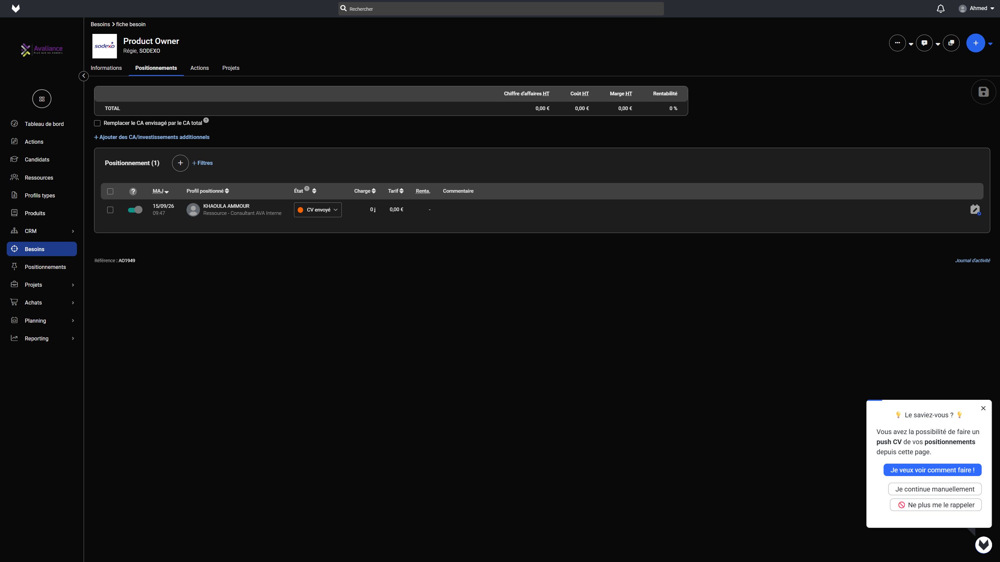
26 — Fiche besoin / Actions
C3 — même gabarit que 19, autre porteur.
Il fait
Journal du besoin. Vide = « Aucune action trouvée pour ce besoin » + Créer une action.
Chef de projet
Un composant Action-sur-porteur, pas trois modules.
Auditeur
Le vide le dit : le besoin peut exister sans aucun fait CRM.
27 — Fiche besoin / Projets
C3 → C4. Vide tant que rien n’est signé. + Créer un projet.
Il fait
Liste des projets nés de ce besoin. Empty state + bouton Créer un projet.
Il ne fait pas
Staffer. Recruter. Le projet naît après le matching.
Chef de projet
Porte C3 → C4. Un besoin sans projet est normal (pas encore gagné).
Auditeur
On a ouvert un besoin avec 1 positionnement et 0 projet. Le matching précède la mission.
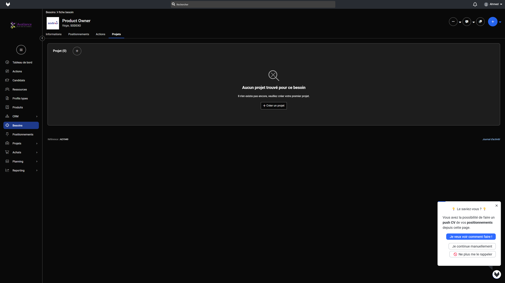
28 — Créer un Projet (depuis le besoin)
C3 → C4. On convertit des positionnements en prestations. Les candidats sont exclus.
Il fait
Modal : choisir le collaborateur (positionnements à convertir en prestations) · Créer un nouveau positionnement · Annuler / Créer
Texte vu
« Les positionnements non actifs et ceux liés à des candidats sont exclus. Pour les inclure, modifier leur état ou convertir les candidats en ressources. »
Chef de projet
V1 : on ne facture pas un candidat. Passage candidat → ressource avant C4.
Auditeur
C’est la preuve la plus dure : Boond refuse le pont C2 → Prestation. Ne pas fusionner les tables.
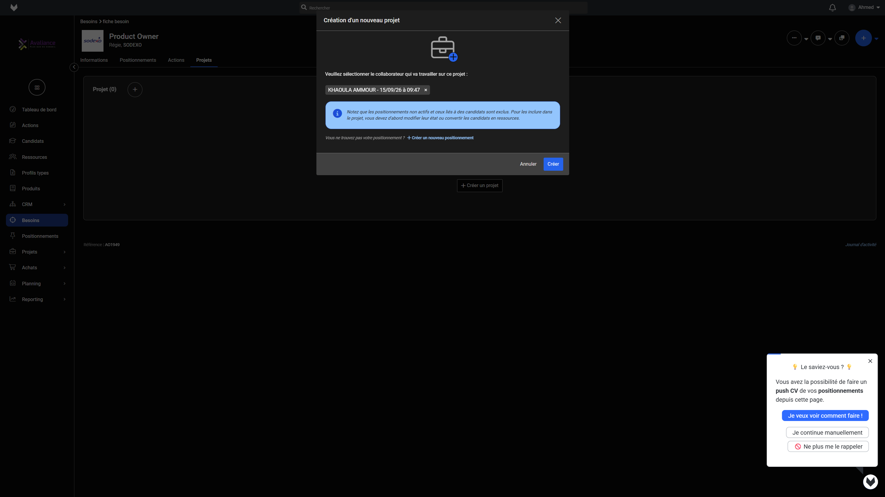
29 — Fiche candidat / Positionnements
C2 — vue inverse de 25. Ici : les besoins sur lesquels CE candidat est posé.
État vu
Vide + Créer un positionnement. Mène au même assistant que 23.
Chef de projet
Deux portes vers le même objet : depuis le candidat ou depuis le besoin.
Auditeur
0 positionnement sur un candidat vivant. Le vivier n’est pas le matching.
30 — Fiche ressource / Synthèse
C3 C4 — même chrome que le candidat, trois onglets en plus.
Deuxième vague : la fiche Contact complète, les 3 Kanban qui comptent, la production (prestation, projet), les achats/factures/paiements, le planning, les 4 reporting, les modales globales (Ctrl+K, Filtres, Créer besoin), l’accueil Administration, et les onglets encore jamais vus (Facturation société, Formulaires ressource).
34 — Fiche contact / Synthèse
C1 — même chrome que candidat/ressource, objet différent : personne chez une société.
V1 : nom, fonction, société, email/tél. Le périmètre techn./fonctionnel est du confort commercial.
Auditeur
« Influenceurs » = référentiel propre au contact, distinct du manager. Ne pas fusionner.
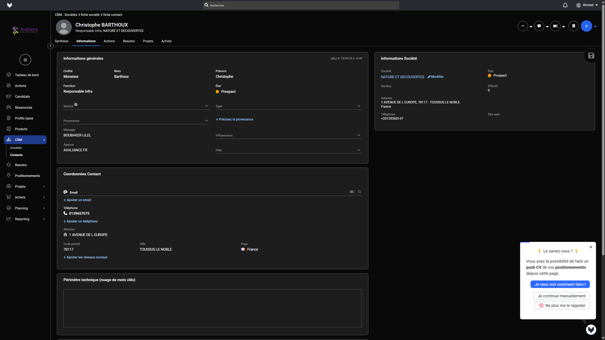
36 — Menu + de la fiche contact
C1 — trois sorties seulement : Action, Besoin, Achat. Pas de Projet direct, pas de Positionnement.
Il crée
Action · Besoin (lien) · Achat (lien)
Il ne crée pas
Positionnement, Projet direct, Contrat — ça reste le monde C2/C3/C4.
Chef de projet
Le contact nourrit le CRM (action) et déclenche la demande (besoin). Il ne staffe jamais.
Auditeur
Menu + le plus court des 5 fiches vues. Preuve que Contact reste C1 pur.
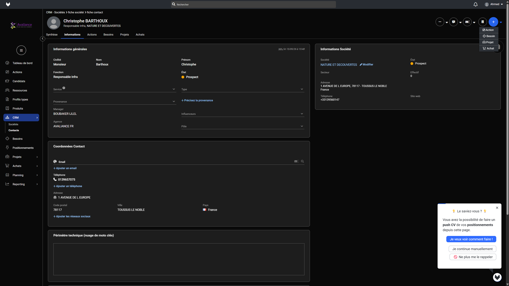
37 — Kanban Candidats (par étape)
C2 — 20 727 candidats répartis en colonnes = les 14 étapes admin, pas un enum figé.
Colonnes vues
A traiter (9711) · En cours (4376) · Vivier++ (80) · Clos (952) · A relancer (4688) · En attente (149) · Ex Collaborateur (99) · Non validé (84) · Validé (103)…
Carte
Nom, titre, 2 pastilles (positionnement / DT)
Chef de projet
Le Kanban est une vue, pas un objet : glisser une carte change l’étape, rien de plus.
Auditeur
9 711 « A traiter » sur 20 727 : le vivier est majoritairement non qualifié. Chiffre à vérifier avant tout dimensionnement.
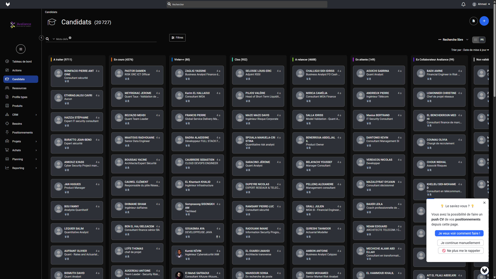
38 — Kanban Besoins (par état)
C3 — 1 922 besoins. Colonnes = états admin (A traiter, P1, P2, P3, En cours, Vivier, Reporté, Gagné…).
Carte
Titre, client, manager, montant, nb positionnements actifs
Chef de projet
Vue commerciale du pipeline. Le même besoin change de colonne quand son état change en fiche.
Auditeur
Colonne « Reporté » à 193 lignes / 6,89M€ : un besoin reporté n’est pas clos, il pèse encore dans le CA envisagé.
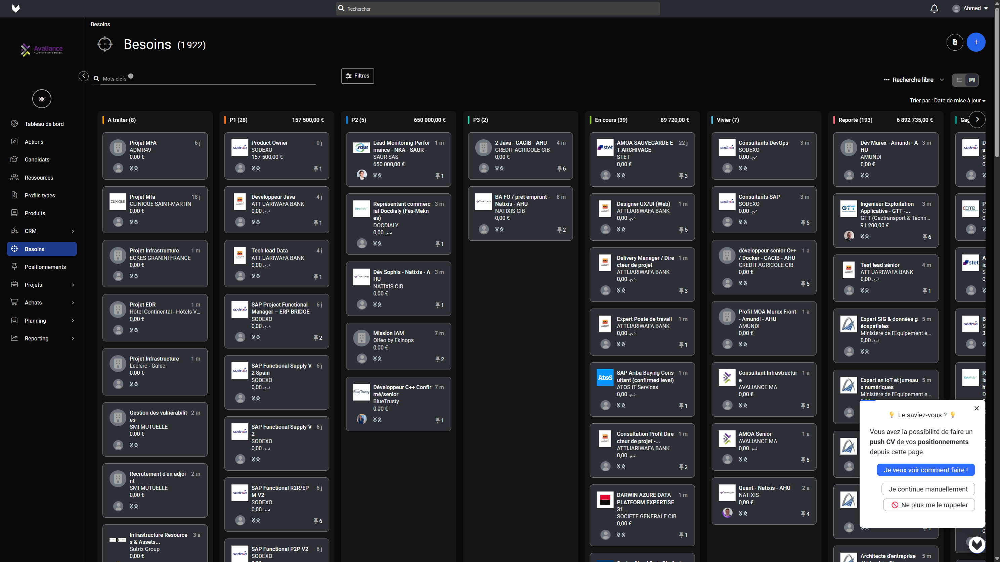
39 — Kanban Positionnements (par état)
C2 ∩ C3 — 4 468 positionnements. Colonnes = les 9 états admin (Proposé, NO GO interne, GO interne, CV envoyé, Présenté Client, Désistement, Validé…).
Carte
Nom du profil, société cible
Chef de projet
C’est le tableau de pilotage du staffing au jour le jour, plus lisible que la liste.
Auditeur
« Proposé » (1 558) + « NO GO interne » (718) = plus de la moitié du flux. Le filtre interne consomme plus que le rejet client.
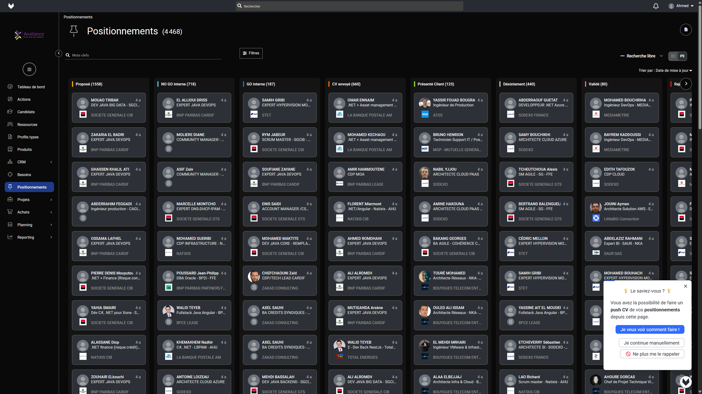
40 — Prestations (liste globale)
C4 — 232 lignes. Toutes les prestations de tous les projets, une seule table.
Colonnes
Début, Fin, Référence, Projet (+ ressource en sous-ligne), Client, CA HT, Renta., Manager
Chef de projet
C’est la table de vérité de la production : qui facture, sur quel projet, à quelle renta.
Auditeur
Beaucoup de CA à 0,00 : prestation créée avant tarification, comme pour les projets.
CA total besoins pond. · Nb besoins/positionnements créés (par état) · Contacts par type d’action
Chef de projet
C’est le dashboard qu’on branche en dernier, une fois les objets réels.
Auditeur
Toutes les colonnes futures à 0 : le reporting ne prédit rien, il compte le passé/présent.
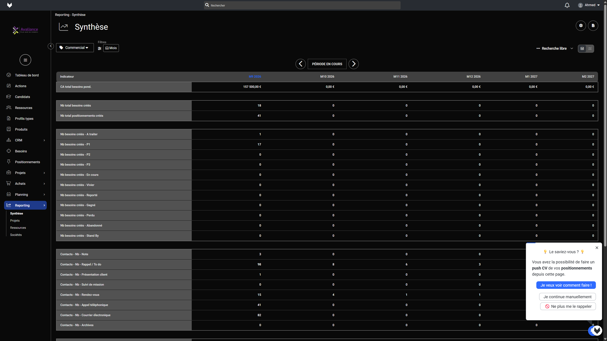
46 — Reporting / Projets
25 projets en colonnes, indicateurs en lignes (CA, coût, marge, temps, avancement).
Chef de projet
Vue transposée pratique pour comparer les projets côte à côte sur un même indicateur.
Auditeur
« Total des temps commandés/consommés » en jours : preuve que le temps est rattaché au projet via la prestation, pas saisi ici.
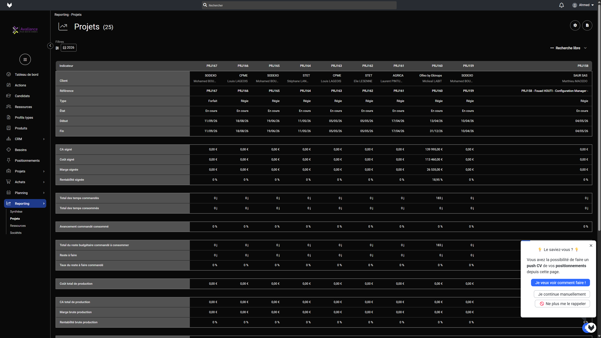
47 — Reporting / Ressources
6 ressources filtrées, 6 indicateurs (CA signé, renta., TACI, CA production, renta. réelle, TACI consommé).
Chef de projet
TACI (Taux d’Activité Commercialisée Interne) apparaît seulement ici — vocabulaire Boond à traduire pour le miniature.
Auditeur
Filtre « 6 Indicateurs » par défaut : liste réduite, pas exhaustive sans reset (même piège que les listes).
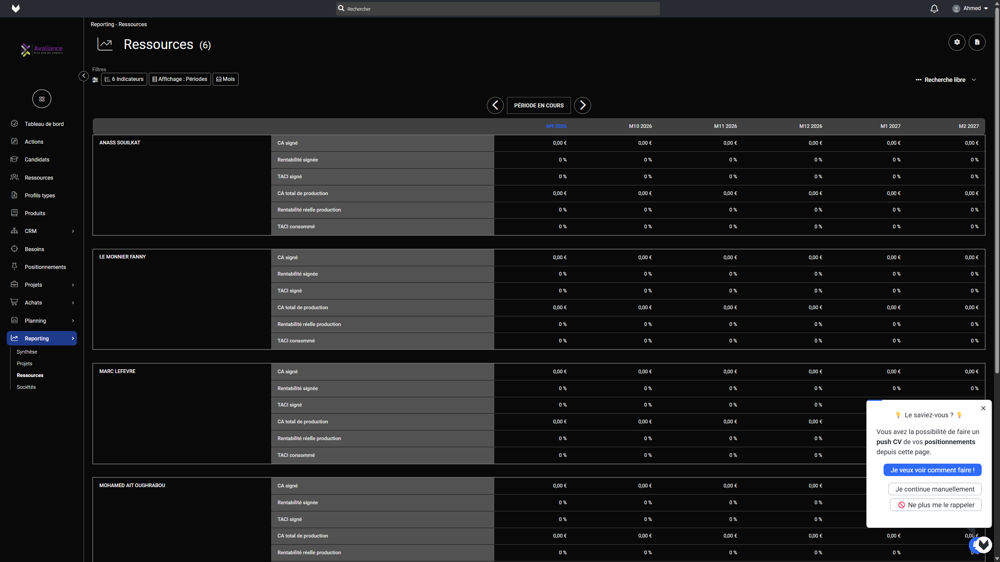
48 — Reporting / Sociétés
2 579 sociétés en colonnes. Nb projets (par type), nb recrutements réalisés, nb ressources en prestation (interne/externe).
Chef de projet
« Recrutements réalisés » ≠ candidats créés : c’est un compteur sur le passage candidat → ressource.
Auditeur
Ressources internes vs externes en prestation : la société peut consommer du staff Avaliance ET du staff tiers.
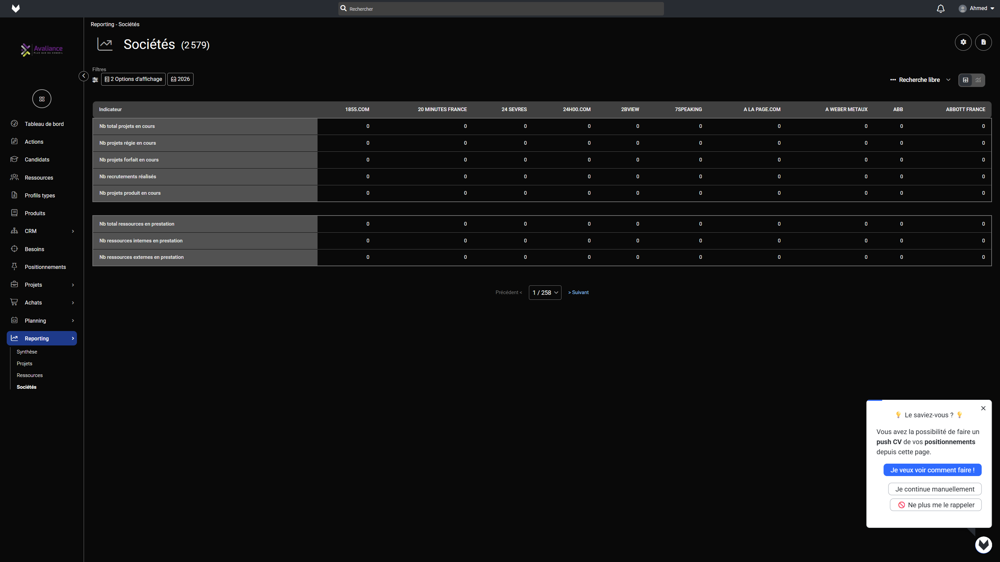
49 — Menu compte (Ahmed ▾)
Le vrai menu self-service, distinct du menu métier de gauche.
Items
Mon compte · Ma fiche · Mes temps · Mes frais · Mes absences · Configuration · Mes flags · Mon offre · Centre de téléchargement · Journal d’activité · Extensions et applications · Administration · Déconnexion
Chef de projet
« Ma fiche » = raccourci vers sa propre fiche ressource. Le compte EST une ressource, pas un objet séparé.
Auditeur
Confirme FONCTIONNEMENT_BOOND : Manager = Ressource + rôle. Ce menu est la preuve visuelle.
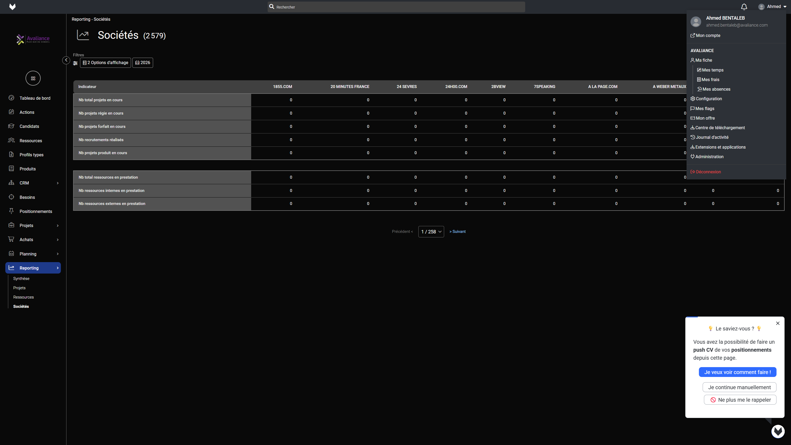
50 — Mes temps → 403
« Vous ne passerez pas » (Gandalf). Le lien existe dans le menu ; le rôle actuel n’a pas le droit.
Il fait
Bloque l’accès à la saisie de temps pour ce compte/rôle.
Chef de projet
Preuve concrète de droits par rôle : même menu visible, accès refusé selon le périmètre.
Auditeur
Mes frais → même 403. Self-service temps/frais/absences non ouvert sur ce compte : à confirmer avec un compte consultant réel.
Importer vos données · Espace développeur · Webhooks
Chef de projet
V1 : Managers/Rôles + Paramètres globaux (référentiels étape/état). Le reste attend.
Auditeur
Sous-écrans non cliquables depuis cette session (droit ou route SPA non exposée en URL directe) : à ouvrir avec un compte admin confirmé.
58 — Fiche société / Facturation
C1/C5 — coordonnées de facturation, distinctes de l’adresse société.
État vu
Vide + « Créer coordonnées de facturation »
Chef de projet
Hors v1 : la facturation client complète est un module (PostProduction), cet onglet n’en est que les coordonnées.
Auditeur
Onglet présent mais vide sur ce tenant : ne pas conclure qu’il est inutile, juste non rempli ici.
59 — Fiche ressource / Formulaires
C4 — dernier onglet ressource, jamais vu côté candidat.
État vu
Vide + « Créer un formulaire »
Chef de projet
Formulaire = document RH généré (attestation, avenant…), pas un objet du staffing quotidien.
Auditeur
Ferme la carte des onglets ressource : Synthèse, Informations, Administratif, DTs, Actions, Positionnements, Prestations, Projets, Formulaires — 9 au total contre 6 pour le candidat.
Limites de cette passe
Les 9 apps internes (écran 16 : Célébrations, DocTemplates, Emailing, ExtractPayroll, HRFlow, Microsoft, PlanProduction, PostProduction, Viewer) et les sous-pages Administration (Managers/Rôles, Agences, Paramètres globaux, Modèles, Apps/Marketplace) n’ont pas d’URL directe et leurs cartes ne répondent pas au clic simulé dans cette session — probablement une route Ember interne ou un droit non exposé. Elles restent hors preuve visuelle ; ne pas leur inventer de champs.
Intégrité (ce qui doit rester vrai)
Besoin et projet ont une société
Positionnement a un besoin et un seul humain (candidat XOR ressource)
Prestation a un projet et une ressource
Action a un porteur
Manager a une ressource et un rôle
Temps s’appuient sur une prestation, pas sur un candidat
Un positionnement candidat ne se convertit pas en prestation : il faut d’abord la ressource